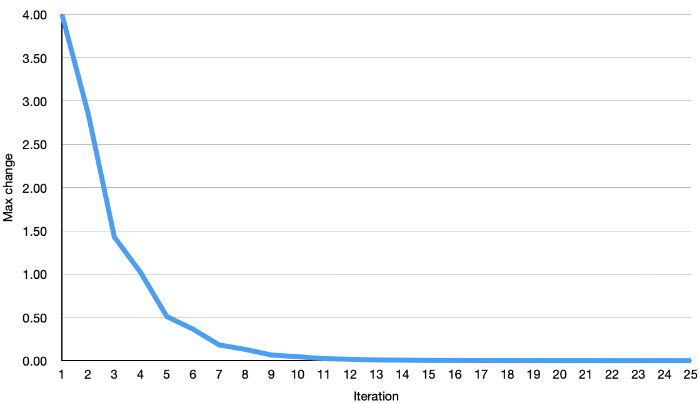

3. Scientific Computing
Overview
To complete our introductory material on C programming, we’ll briefly look at how we might use the C programming language to solve problems in scientific computing.
In this practical, we will cover the following topics:
- Scientific problems represented as partial differential equations (PDEs)
- Solving partial differential equations
- Direct methods
- Iterative methods
- The Jacobi method
- The Gauss-Seidel method
Partial Differential Equations
As you may well remember from A-level Mathematics, (ordinary) differential equations are often used to describe changes over time or space. Partial differential equations, or PDEs, are often used to describe how something changes over both time and space.
A great number of problems in the sciences can be expressed as PDEs, and therefore a great deal of scientific computing is focussed on efficiently solving PDEs.
The Heat Equation
As an example, let’s look at the heat equation in one dimension. Imagine a metal rod where one end is held at a high temperature, while the other end is held at a cold temperature. In this example, heat would “flow” from the hot end to the cold end. The heat equation is expressed as a PDE as follows:
\[\frac{\partial u}{\partial t} = k \frac{\partial^2 u}{\partial x^2}\]In the above equation: $u(x,t)$ is the temperature at position $x$, at time $t$; $k$ is the thermal diffusivity (i.e. how well heat diffuses in the material); $\frac{\partial u}{\partial t}$ is how the temperature changes over time, while $\frac{\partial^2 u}{\partial x^2}$ is how the temperature changes over the length of the metal rod.
Perhaps the simplest solution to solving this PDE is to use a finite difference approximation. We can replace the derivatives with approximate differences:
\[\frac{\partial u}{\partial t} \approx \frac{u_i^{n+1} - u_i^n}{\Delta t}\] \[\frac{\partial^2 u}{\partial x^2} \approx \frac{u_{i+1}^n - 2u_i^n + u_{i-1}^n}{(\Delta x)^2}\]Substituting these finite differences back into the heat equation above:
\[\frac{u_i^{n+1} - u_i^n}{\Delta t} = k \cdot \frac{u_{i+1}^n - 2u_i^n + u_{i-1}^n}{(\Delta x)^2}\]Finally, we can rearrange this to provide an expression for the next time step:
\[u_i^{n+1} = u_i^n + \frac{k \Delta t}{(\Delta x)^2} (u_{i+1}^n - 2u_i^n + u_{i-1}^n)\]In other words, we can calculate the temperature at time step $n+1$, using the previous value and surrounding values (at locations $i$, and $i+1$, $i-1$, respectively, at step $n$).
Given some initial condition and some boundary conditions (i.e. a starting state, and some fixed states on the boundaries of our computational domain), we can iteratively simulate the transfer of heat from one end of the rod to the other.
Solving Partial Differential Equations
In the general case, we can express a linear PDE (or linear system of PDEs) in matrix form, like so:
\[A\vec{x} = \vec{b}\]Where $A$ is a matrix that encodes our equation, $\vec{x}$ is the solution vector, and $\vec{b}$ is our known values or our boundary conditions.
For the heat equation example above, we could rewrite the equation as:
\[\vec{u~}^{n+1} = A \vec{u~}^n + \vec{b}\]Where (in a simplified case for three internal points):
\[A = \begin{bmatrix} 1 - 2\frac{k \Delta t}{(\Delta x)^2} & \frac{k \Delta t}{(\Delta x)^2} & 0 \\ \frac{k \Delta t}{(\Delta x)^2} & 1 - 2\frac{k \Delta t}{(\Delta x)^2} & \frac{k \Delta t}{(\Delta x)^2} \\ 0 & \frac{k \Delta t}{(\Delta x)^2} & 1 - 2\frac{k \Delta t}{(\Delta x)^2} \end{bmatrix}\]Broadly speaking, there are two approaches to solving systems of linear equations: direct methods and iterative methods.
Direct Methods
We won’t cover direct methods in much depth here, but suffice to say that direct methods solve systems of linear equations exactly using a finite sequence of operations.
Perhaps the best example of a direct method is the Lower-Upper (or LU) decomposition.
In this method, we decompose the matrix $A$ into the product of a lower ($L$) and an upper ($U$) matrix, such that,
\[A = LU\] \[\begin{bmatrix} a_{11} & a_{12} & a_{13} \\ a_{21} & a_{22} & a_{23} \\ a_{31} & a_{32} & a_{33} \end{bmatrix} = \begin{bmatrix} l_{11} & 0 & 0 \\ l_{21} & l_{22} & 0 \\ l_{31} & l_{32} & l_{33} \end{bmatrix} \begin{bmatrix} u_{11} & u_{12} & u_{13} \\ 0 & u_{22} & u_{23} \\ 0 & 0 & u_{33} \end{bmatrix}\]In this form, we can reframe our system of linear equations as:
\[LU\vec{x} = \vec{b}\]In this form, we can directly solve for $x$ using two logical steps (using forward and backward substitution):
- Solve the equation $L \vec{y} = \vec{b}$ using forward substitution
- Solve the equation $U \vec{x} = \vec{y}$ using backward substitution
In the general case, some matrices cannot be LU decomposed directly. However, we can introduce a permutation matrix to reorder the rows, such that:
\[PA = LU\]With pivoting (sometimes known as an “LUP” decomposition) it is always possible to decompose a square matrix.
Iterative Methods
Direct methods, such as the LU and LUP decomposition methods, provide exact solutions to PDEs in a single pass. They work well when a matrix is reasonably small and dense (i.e. contains mostly non-zero entries). However, for larger matrices, or spare matrices, direct methods are slow and memory-intensive. For these problems, we typically employ an iterative method, like in the heat equation example above.
While they do not provide exact solutions, iterative methods are simple, fast, and scalable (a key consideration in high-performance computing).
As the name suggests, iterative methods work to iteratively improve a solution, from an initial approximation. This may be hill climbing, gradient decent, or something more complex such as Newton’s method.
The remainder of this practical will focus on two iterative methods and their implementation in C.
The Jacobi method
One of the simplest methods for solving linear systems was devised by Carl Gustav Jacob Jacobi in around 1845. The Jacobi method works on matrices that are diagonally dominant. That is to say, matrices where the magnitude of the diagonal entry in a row is greater than or equal to the sum of the magnitudes of all other entries in that row. Or, more formally:
\[| a_{ii} | \geq \sum_{j\ne i} | a_{ij} | ~ ~ \forall i\]Consider the linear system $A\vec{x} = \vec{b}$, where $A$ is a square matrix. We can decompose $A$ to be the sum of three components, a diagonal component $D$, a lower triangular part $L$ and an upper triangular part $U$. Note: This is not the same $L$ and $U$ as in the LU decomposition above.
\[A = D + L + U\] \[\begin{bmatrix} a_{11} & a_{12} & \cdots & a_{1n} \\ a_{21} & a_{22} & \cdots & a_{2n} \\ \vdots & \vdots & \ddots & \vdots \\ a_{n1} & a_{n2} & \cdots & a_{nn} \end{bmatrix} = \begin{bmatrix} a_{11} & 0 & \cdots & 0 \\ 0 & a_{22} & \cdots & 0 \\ \vdots & \vdots & \ddots & \vdots \\ 0 & 0 & \cdots & a_{nn} \end{bmatrix} + \begin{bmatrix} 0 & 0 & \cdots & 0 \\ a_{21} & 0 & \cdots & 0 \\ \vdots & \vdots & \ddots & \vdots \\ a_{n1} & a_{n2} & \cdots & 0 \end{bmatrix} + \begin{bmatrix} 0 & a_{12} & \cdots & a_{1n} \\ 0 & 0 & \cdots & a_{2n} \\ \vdots & \vdots & \ddots & \vdots \\ 0 & 0 & \cdots & 0 \end{bmatrix}\]We can then obtain a solution vector iteratively by evaluating:
\[\vec{x}^{n+1} = D^{-1}(\vec{b} - (L + U) \vec{x}^{n})\]Inverting a diagonal matrix
While inverting a matrix can be complex, for diagonal matrices, the process is simple:
\(D^{-1} = \begin{bmatrix} \frac{1}{a_{11}} & 0 & \cdots & 0 \\ 0 & \frac{1}{a_{22}} & \cdots & 0 \\ \vdots & \vdots & \ddots & \vdots \\ 0 & 0 & \cdots & \frac{1}{a_{nn}} \end{bmatrix}\)
With this we can derive an element-based formula for the solution vector $\vec{x}$:
\[x^{n+1}_i = \frac{1}{a_{ii}} \left(b_i - \sum_{j \ne i} a_{ij} x^{n}_{j} \right)\]The more iterations we perform of this formula, the closer our approximation to $x$.
Exercise 1
Implement the Jacobi method in the code below for a fixed number of iterations
MAX_ITERS:#include <stdio.h> #include <math.h> #include <stdlib.h> #include <string.h> #define MAX_ITERS 25 void jacobi_solve(double* A, double* b, double* x, int n) { // check that A is diagonally dominant // iteratively improve x using the element-wise formula } int main(int argc, char *argv[]) { int n = 2; double* A = (double *) malloc(sizeof(double) * n * n); double* b = (double *) malloc(sizeof(double) * n); double* x = (double *) malloc(sizeof(double) * n); // A = [ 2 1 ] b = [ 11 ] // [ 5 7 ] [ 13 ] A[0] = 2; A[1] = 1; A[2] = 5; A[3] = 7; b[0] = 11; b[1] = 13; // initial guess is x = [ 1 ] // [ 1 ] x[0] = 1; x[1] = 1; jacobi_solve(A, b, x, n); printf("Solution is: \n"); for (int i = 0; i < n; i++) { printf("[ %10lf ]\n", x[i]); } }After 25 iterations, you should find that the solution is approximately:
\(x \approx \begin{bmatrix}7.111 \\ -3.222\end{bmatrix}\)
Exercise 2
In Exercise 1 you implemented a basic Jacobi solver with a fixed number of iterations. In each iteration the solution vector gets progressively closer to the answer. For simple cases, only a few iterations may be required, while for complex cases many hundreds of iterations may be necessary.
After each iteration we can calculate how much the resulting vector is changed from the previous iteration.

Figure 1: Largest change in vector $x$ between each iteration.We can observe from Figure 1 that the answer changes very little after iteration 11 or 12. Depending on the level of accuracy we might require, we could have chosen to stop our solver at this point knowing that the answer is “good enough”.
Implement a simple convergence check into your solver, such that if the maximum change between iterations is less than some value (e.g.
eps = 1e-6), the algorithm terminates early (you should keep some notion of a maximum number of iterations, just in case convergence is very slow).
Exercise 3
The example given above is a very small test case that should help verify the correctness of your Jacobi implementation.
Modify your code to allow the problem size (in terms of $n$) to be specified on the command line.
You will need to update your code to generate an
Amatrix (that is diagonally dominant) and abvector. You could leavexin its original state, or you could set it to all ones or zeros.You can test your solver with the following conditions:
\[A = \begin{bmatrix} n + 1 & 1 & \cdots & 1 \\ 1 & n + 1 & \cdots & 1 \\ \vdots & \vdots & \ddots & \vdots \\ 1 & 1 & 1 & n + 1 \end{bmatrix}, b = \begin{bmatrix} 2n \\ \vdots \\ 2n \end{bmatrix}\]The solver should converge with the following answer:
\[x = \begin{bmatrix} 1 \\ \vdots \\ 1 \end{bmatrix}\]You can now evaluate how well your solver scales with problem size.
Depending on your initial values for x in Exercise 3 (your “guess”), you may find that your code converges quickly (if your initial guess was $[ 1.0, …, 1.0 ]^{T}$ for the test problem), or quite slowly (if your initial guess was $[ 0.0, …, 0.0 ]^{T}$ for the test problem).
Providing an initial guess is known as “preconditioning”. Preconditioning is an active area of research within HPC, and within scientific computing. The better your preconditioning, the faster your solver might converge (and thus, the less computation you might require).
The Gauss-Seidel Method
The Gauss-Seidel Method is an alternative method devised by Carl Friedrich Gauss and Philipp Ludwig von Seidel. It predates the Jacobi method by around 20 years, but wasn’t published until sometime later (1874).
The method is very similar to the Jacobi method, with a crucial difference. Where in the Jacobi method, each iteration depends only on the previous iteration, the Gauss-Seidel method uses intermediate values in the update, so only a single solution vector is required (rather than having to maintain a copy from the previous iteration).
Again, consider the linear system $A\vec{x} = \vec{b}$, where $A$ is a square matrix. We can determine solution iteratively using:
\[L\vec{x~}^{n+1} = \vec{b} - U\vec{x~}^{n}\]In this formulation, $L$ is a lower triangular matrix and $U$ is a strictly upper triangular matrix (i.e. in contrast to the Jacobi method, $L$ includes the diagonal, while $U$ does not).
We can then rearrange this to provide an expression for $\vec{x~}^{n+1}$:
\[\vec{x~}^{n+1} = L^{-1} \left(\vec{b} - U \vec{x}^{n} \right)\]Using forward substitution and taking advantage of the triangular nature of $L$, we can write an element-wise formula like so:
\[x^{n+1}_{i} = \frac{1}{a_{ii}} \left(b_i - \sum_{j = 1}^{i - 1} a_{ij} x^{n+1}_{j} - \sum_{j = i+1}^{n} a_{ij} x^{n}_{j} \right)\]You may well note that the element-wise formula is very similar to the formula we used previously, but now there are two summations, one using the current iteration $n+1$, and one using the previous iteration $n$. If we combine these iterations, we get the same formula as for the Jacobi method, except we no longer need to store the previous values of $x$. Instead, we simply always use the most recent version of $x$, whether from the previous iteration, or the current iteration.
Exercise 4
Copy your code the Jacobi method to a new function (perhaps called
gs_solve), and modify it to implement the Gauss-Seidel Method.
Because the algorithm can update in-place, it is more memory efficient, and using the latest data means that it converges more quickly. However, because of the data dependency, it is much more difficult to parallelise the Gauss-Seidel method.
Other Methods
There are a host of alternative methods for solving systems of linear equations. Both the Jacobi method and the Gauss-Seidel method can be “weighted” to improve their convergence. The method of successive over-relaxation is a variant of Gauss-Seidel with a relaxation factor to improve performance.
The conjugate gradient method is another algorithm for solving systems of linear equations that is commonly seen in HPC software. This algorithm is the basis for the HPCG benchmark, typically used alongside LINPACK to rank supercomputer systems.
Throughout the remainder of this course you will encounter iterative methods again. The focus will be on parallelising and optimising their performance to solve complex scientific problems as quickly as possible.